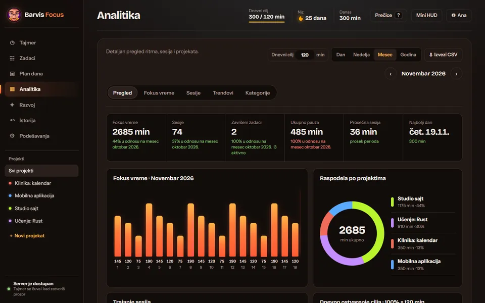

Fókusz, amely
a célon marad.
- Probléma
- Időzítő az egyik appban, feladatok a másikban, jegyzetek a harmadikban. Nem látszott, hová megy az idő.
- Megoldás
- Projekthez és feladathoz kötött időzítő, napi terv, napi, heti és havi statisztika, valamint a befektetett idővel növekvő szintek.
- Technikai oldal
- Ugyanaz az időzítő fut számítógépen és telefonon, kis ablak más appok fölött, parancspaletta és teljes billentyűzetes használat.
- Technológia
- Django, PostgreSQL, Docker; saját szerver.




Olyan eszközre van szüksége, amely a munkamódját követi?
Írjon nekem